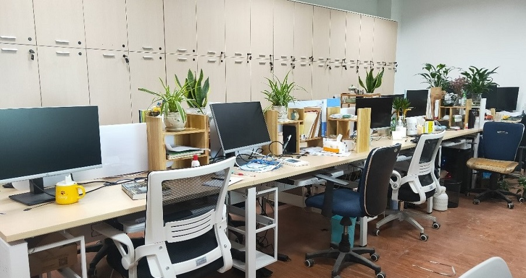

在刚刚结束了残酷激烈的初复试后，终于成功迈进了研究生的这一门槛，同时这也标志着你即将进入了一个新的学习环境。
对于初来乍到的新生，相信你对的研究生生活是存在困惑的，虽然之前也曾听过不少师兄师姐提及过，但是这样的生活究竟是怎样的只有你自己体会了才能知道。

当然最重要的一点是分你选择的实验室，有的实验室需要早中晚打卡，有的实验室可能比较轻松有的实验室偏项目方向，有的实验室偏学术方向……
我们通软实验室是一个温馨的大家庭，在这里你不需要像其他实验室一样上中晚打卡，工作时间灵活，此外实验室历来注重集体感，往年乃至现在的师兄师姐们关系都亲如家人，我们在平常的时候都会举行一些聚会，聚会上大家都会分享自己的学习心得，讨论每天发生的趣事，亲测在这样的环境下，即使是社恐的你也会在大家的日益交流下变得更加开朗。
研一的时候会留给更多的时间来让你完成自己的学业课，以便于你能够在科目成绩有充分时间来取得更好的成绩，此外这里也为初来乍到的你准备了工位，当没有课时以便于能够来实验室学习更多项目上的知识，师兄师姐也会在旁边指导你们，在研二接手项目时能够更加“快人一步”。

团队中研究生培养主体分为三个阶段：专业学习、研发/工程项目实践、理论的研究与提炼。但具体不同的有两大种，一种是研发方向，一种是监理方向，研发方向需要在实验室里面完成相应的任务，而监理方向则是需要到山下公司去完成一些工作任务，但无论是哪种方向，都能丰富你的学业经历，对你以后的找工作都是有很大的帮助。
团队的研究领域包括通信网理论与技术、物联网通信平台、融合通信设备、协议软件开发、通信软件测试、信息项目管理等。主要培养具备科学研究、技术开发、工程实践及管理的综合能力的高级专业人才。也就是研发的任务，需要懂得不同语言的编程知识，再将其应用到实际当中来。可能在学习C++、Python这样的语言时，感到比较空洞，因为不知道要拿它来干些什么，这时当与我们所学的项目的挂钩时，则会有针对性，这样的学习不论是对学习语言还是项目都能受益匪浅，另外可在研一的时候报一些比赛，比赛也是锻炼代码能力的体现，同时也能为拿下奖学金争取到更多的学分。
信息化工程项目建设监理，指信息化监理机构根据相关法律法规及标准，对信息化工程建设单位及承建单位进行督察、监控和评价，并采取各项管理措施，协助有关人员达到预期目标。日常接触到的人员分为：甲方即工程建设单位（大多为国家、省部、地市相关政府部门）；乙方即项目承建单位（大多为国内信息化设备建设知名企业）。监理方作为第三方，对项目起到推动与协调的作用。
研究生生活是忙碌而充实的，实验室优良的硬件环境、与老师与同窗之间的和谐氛围、丰富的实践项目均带动着我，不断向前。新的一年，我们诚挚地期待着团队注入新的血液，希望我们都能够不负韶华，奋勇向前。